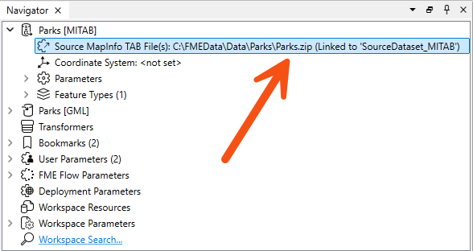
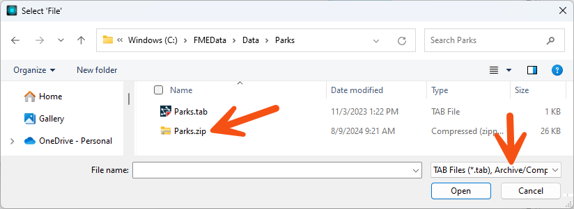
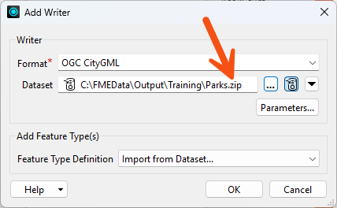
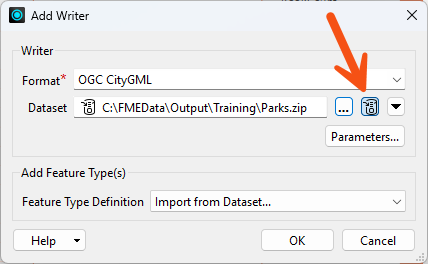
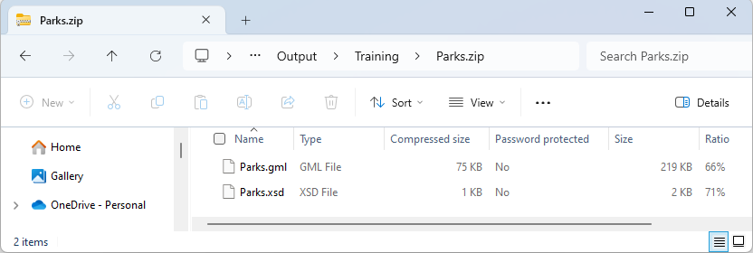

You can use wildcards when reading archive files, just as with regular files. See the documentation for examples.
Learning Objectives
After completing this lesson, you’ll be able to:
In this lesson, you will:
FME readers and writers can work with compressed, archived files of various formats. In addition to size reduction, these file types are a convenient way to store datasets that need to be handled as a single unit, for example, a set of multiple dataset files contained within a single zip file.
FME can read the following archive formats:
The dataset a reader reads is defined by the Source Dataset/Files parameter in the Navigator window:

This dataset parameter can point to an archived file, as shown in the screenshot above. You select the archive file in the source parameter, and FME will extract the data when it reads it.
This technique works whether the archived dataset is file-based (such as a single AutoCAD file) or folder-based (such as the set of files that make up a Shapefile dataset).
Because FME supports reading archived files, you might notice the default file filter includes archive formats when browsing for a reader dataset:

You can use wildcards when reading archive files, just as with regular files. See the documentation for examples.
Writing data as a zip file is particularly useful when the output data needs to be post-processed. For example, if you use a shutdown script to move or copy output data to a new location, handling a single archive file is more convenient than multiple data files.
The simplest way to create a zipped output is to change the file extension in the output dataset field:

You can also specify the filename to write to the archive file. A shortcut button does this for you:

Notice the small icon to the left of the dataset field that indicates whether the dataset is zipped.
When the workspace is run, the log file reports the file creation at various points:
MULTI_WRITER: Output will be zippedZipping the contents of the temporary datasetFinished updating output zip file: `C:\FMEData\Output\Parks.zip'
...and the output is, indeed, a zip file:

Some users may want to archive data as a single entity to move or copy it to a different location. You can use a combination of user parameters and TCL or Python shutdown scripts to find the file you just wrote and move/upload it. Alternatively, you can use the FeatureWriter transformer, which provides the dataset's path as an attribute, allowing you to do whatever you want with that path using FME transformers.
Some file formats like .docx and .xlsx are actually just ZIP files. But FME won't recognize them as such. What are your options for reading files like that?
Thanks to FME Community user ctredinnick for this advice.